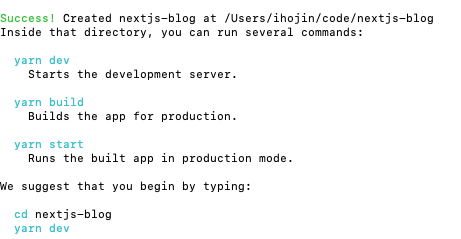
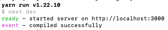
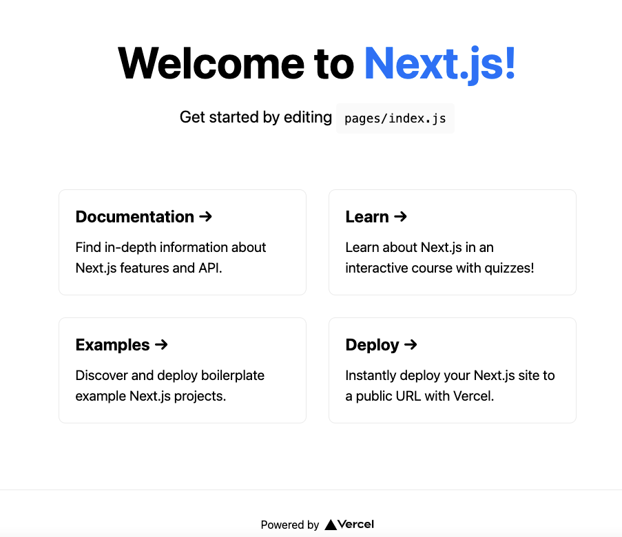
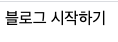
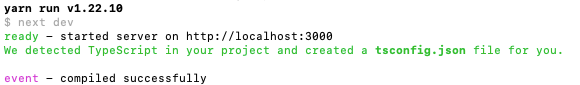

next(ts) 로 gh-pages 에 blog 하기(1)
1. next 를 사용하는 이유?
react 는 강력한 기능을 가지고 있지만 그것을 다 사용하기에는 숙련된 경험이 필요합니다.
저는 백엔드 개발자이며 2015년 0.14x 버전의 리엑트를 사용한 경험이 전부입니다.
그 후에는 vue 를 1년여정도를 사용했지만 이때도 vue framework 인 nuxt 를 자주 사용했습니다.
라우터나 미들웨어 plugin 을 적용하는 방식이 손쉽게 다가왔습니다.
흡사 초기 2.5버전의 스프링을 설정할때 xml 지옥을 맛보다가
스프링부트가 나오고 통상적인 관례를 따지는 설정방식과 유사하다는 느낌을 받았습니다.
회사의 ui 라이브러리가 react 로 정해진점과
gatsby 같은 다른 프레임워크보다는 next 가 회사 업무의 연장으로 더 활용할수 있다 판단하였습니다.
그리고 마지막으로 제일 중요한 이유는 그냥 하고 싶었기 때문입니다.
2. next 시작하기
nuxt 는 버전이 좀 다르긴 해도 한글문서가 좀 잘 되어있고 설치시 cli 로 많은 starter 를 고르 수 있었는데
제가 못찾은건지 next 는 영문문서만 있고 cli 가 단순히 설치만 가능했습니다.
코드를 생성할 폴더로 가셔서 아래의 명령어를 수행해주세요.
2021-01-01 기준 node 10.13 이상 버젼이 설치되어있어야합니다.
npx create-next-app nextjs-blog
이렇게 하시면 프로젝트가 생성이 됩니다.
npx 의 설명은 https://geonlee.tistory.com/32 해당 블로그에 잘 나와있으니 링크로 대신하겠습니다.
nextjs-blog 라는 폴더로 프로젝트가 생성이 됩니다. 원하시는 이름으로 생성하셔도 됩니다.
설치가 되고나면 아래와 같이 폴더를 이동해서 yarn dev 를 수행해보라고 나옵니다.

yarn 은 npm 과 같은 역할을 합니다.
yarn dev 는 npm run dev 와 같은 역할을 합니다.
일단 create-next-app 에서도 yarn 을 언급하니 yarn 을 사용해서 실습하도록 하겠습니다.
cd nextjs-blog
yarn dev
를 수행해보시면 아래와 같은 화면이 나올겁니다.

웹 브라우저에서 http://localhost:3000 을 수행해보세요. 그러면 아래와 같은 화면이 나올겁니다.

3. ts 얹기
굳이 타입스크립트를 적용할 필요가 있을까? 궁금해 하실수 있는데요.
사실 블로그만 만드는데는 불필요합니다.
대신 저는 해당 블로그를 만들때 제 업무의 확장으로 보고 있어서
실제 업무로는 타입스크립트도 적용할거라 요것도 타입스크립트를 적용하려 합니다.
먼저 초기셋팅에서 불필요한 파일들을 삭제하겠습니다.
./pages/api/hello.js
./pages/api/
./pages/_app.js
./public/vercel.svg
./public/favicon.ico
./styles/globals.css
./styles/Home.module.css
그리고 ./pages/index.js 파일을 수정하겠습니다.
const Home = () => {
return (
<div>
블로그 시작하기
</div>
)
}
export default Home;
파일이 삭제되었기때문에 yarn dev 로 다시 재시작하고 브라우저를 새로고침 하겠습니다.

이제 타입스크립트를 설정하기위해 작업을 하겠습니다.
touch tsconfig.json
yarn add --dev typescript @types/react @types/node
touch 는 windows 기본 커맨드창에서는 안될겁니다.
툴로 파일을 생성해도 됩니다.
이렇게 수행하면 아래와 같은 메시지가 나오면서 서버가 시동됩니다.

이때 아까 만든 tsconfig.json 파일에는 내용이 채워지고 next-env.d.ts 파일이 생성됩니다.
d.ts 파일은 여기서 따로 언급은 안할게요.
./pages/index.js 파일을 index.tsx 로 이름을 변경해줍니다.
함수형식의 컴포넌트라서 tsx 로 변경해도 잘 될겁니다.
그리고 안쓰는 파일을 미리 삭제했기때문에 ts로 변경하는 파일이 적어서
저는 코드 리팩토링 전에는 항상 안쓰는 파일을 삭제하고 시작합니다.
파일이 삭제되었기때문에 yarn dev 로 다시 재시작하고 브라우저를 새로고침 하겠습니다.
잘 나오시나요?
4. 다음시간에는
아무것도 없는 페이지뿐이라니 실망하셨을것 같습니다.
다음에는 마크다운 파일로 글을 쓰면
글 목록이 나오고 볼수 있는 기능 + 시간이 되면 @ 까지 진행하겠습니다.
디자인이 별로인건 제가 미적감각이 없어서 추후에 진행하려합니다...